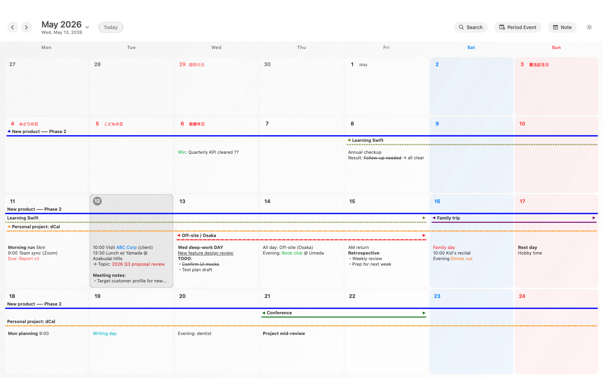
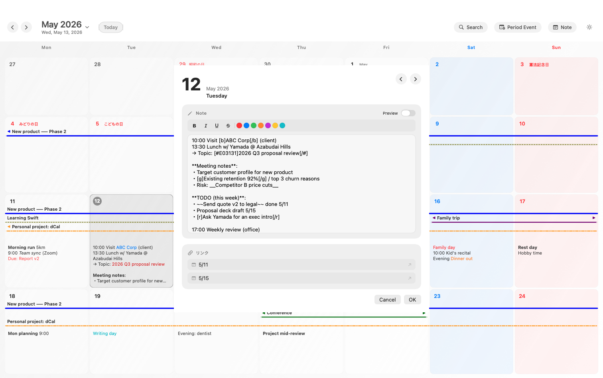
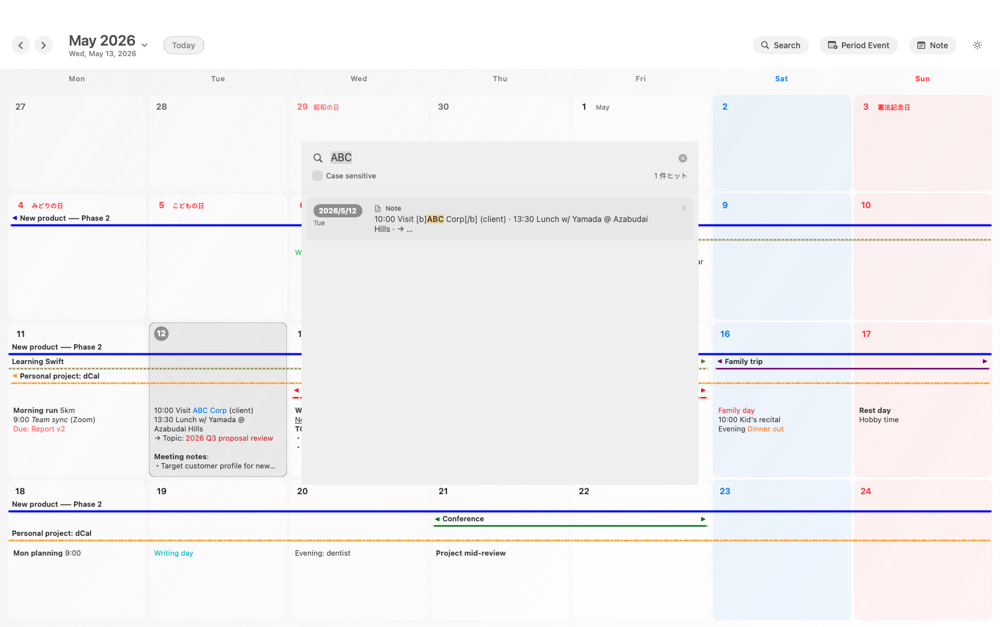
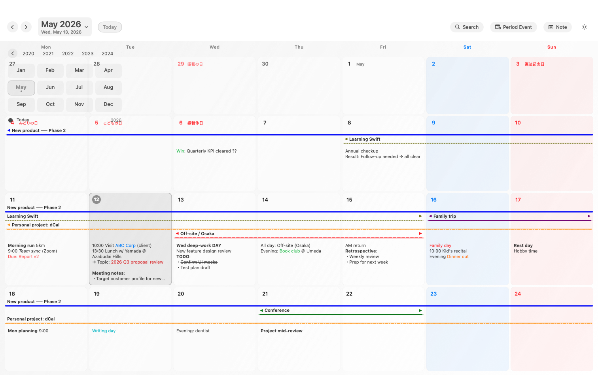
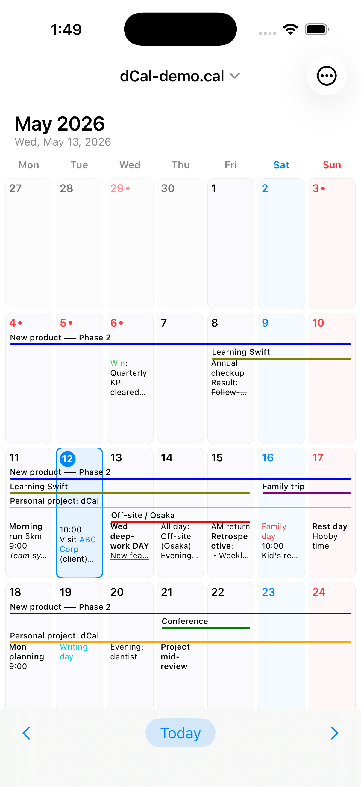
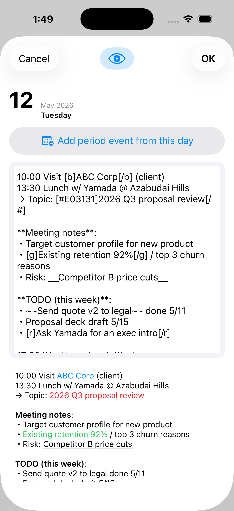
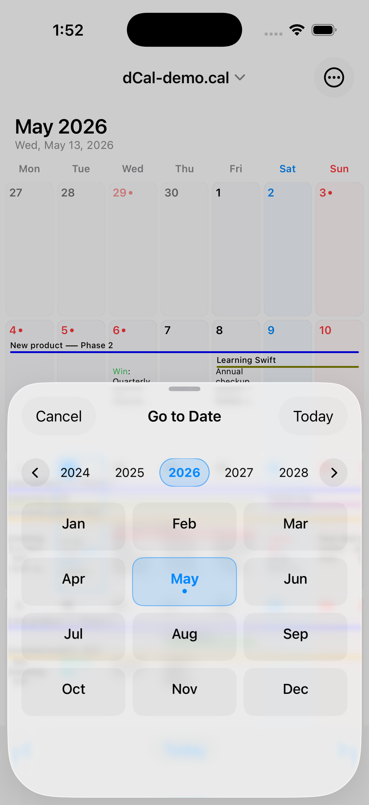
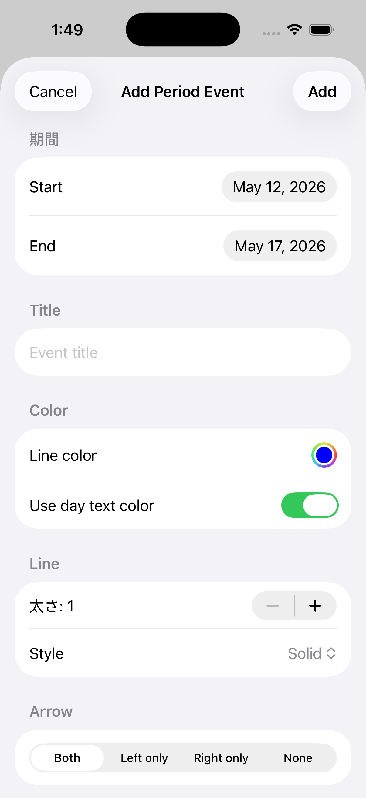
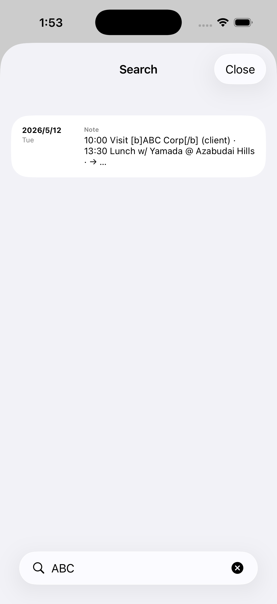
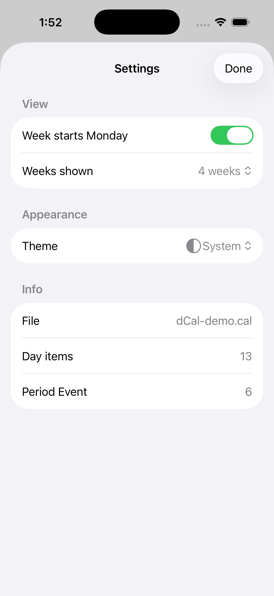

4-week grid view
Switch between 3 and 6 weeks. Multi-day events render as continuous colored lines that don't break at month boundaries — something Apple Calendar's monthly view can't do.
Schedule and notes, kept entirely on your Mac and iPhone. No accounts, no subscription — you choose how to sync, or not to sync at all.
$19.99 one-time / Universal Purchase (Mac + iOS)
Real screenshots from dCal on macOS with demo data loaded. Colored bars flow across week boundaries; each day cell shows its own rich-text notes inline. Click any day to open the formatted long-form editor.




The same .cal file opens on iPhone.
If you sync via iCloud Drive or Dropbox, notes typed on Mac show up
instantly on iPhone with the same formatting tags.






| Cloud-based calendars | dCal (local-first) |
|---|---|
| The app auto-syncs to the vendor's servers | The app makes no network calls at all |
| Your data may be used for AI training or ad targeting | Nothing leaves the app's process |
| Account compromise = full schedule leaked | No account exists in the first place |
| Subscription ends → data locked away | Plain-text files, yours forever |
| Sync is hardwired to the vendor | You choose: iCloud / Dropbox / nothing |
| Monthly view splits multi-month events | 4-week continuous grid |
| Events are mostly just a title | Unlimited per-day notes with formatting |
$ codesign -d --entitlements - dCal.app
com.apple.security.app-sandbox ← enabled
com.apple.security.files.user-selected ← enabled (file picker only)
com.apple.security.network.client ← absent
com.apple.security.network.server ← absentmacOS App Sandbox grants dCal zero network entitlements,
so the OS itself refuses any outbound connection from the app.
If you choose to sync via iCloud Drive or Dropbox, your .cal
file does pass through those services — but that's a sync method
you picked, not something dCal does on its own.
Switch between 3 and 6 weeks. Multi-day events render as continuous colored lines that don't break at month boundaries — something Apple Calendar's monthly view can't do.
Every day cell holds unlimited text — meeting minutes, work logs, family notes. Markdown-style formatting (bold, italic, color) plus full-text search across all your notes.
Including substitute holidays and citizens' holidays. Computed from the official statute, valid 1980 to 2099, no online lookup required.
Horizontal year scroller plus a 12-month grid in a single popover. Two clicks to reach 2003 or 2099.
Search every day note and event title with match highlighting. Stays instant even on multi-thousand-entry files.
Use iCloud Drive, Dropbox, Google Drive, OneDrive, or no sync at all. dCal never talks to those services' APIs — it just reads the file your sync client puts on disk.
No proprietary binary. Your .cal file remains
human-readable. Even without dCal twenty years from now, your data
stays alive.
dCal opens .cal files from the Windows freeware
hyCalendar
byte-for-byte unchanged. If you've used hyCalendar for years and
want to keep going on macOS, this is your path.
Client and case names should never be on a cloud you don't own
Patient identifiers, appointment data — all sensitive
M&A, hiring, board meetings — schedules you can't risk leaking
Daily logs and source meetings worth keeping long-form
Want four weeks at a glance, without signing the family up for an account
Migrating to Apple but keeping decades of .cal data
$19.99 one-time
Universal Purchase unlocks Mac and iOS
Wherever you choose. You can keep everything on a local disk, or place the file in iCloud Drive / Dropbox to share between devices. The point is: you pick the location. dCal never auto-sends your file anywhere.
Correct. dCal does not talk to any cloud service of its own. If
you want multi-device sync, place the .cal file in
iCloud Drive, Dropbox, Google Drive, OneDrive, etc., and dCal reads
the synced local copy. Fully offline operation is also supported.
Yes, that's true. If you place the file on iCloud Drive or Dropbox, the data lives on those clouds. But dCal itself does not talk to any of them — you decide which cloud to use, or none at all. Cloud-based calendars like Google Calendar lock you into the vendor's servers; that's the fundamental difference.
Yes, byte-for-byte compatible. Real-world files (3 MB+, 7,000 day entries, 1,700 period events) load without issue.
Not via dCal — the app cannot transmit anything. If you choose to sync via iCloud Drive or Dropbox, any downstream data handling falls under those services' privacy policies. To eliminate all external transmission, keep your files local-only.
Planned for 2027. Please contact us.